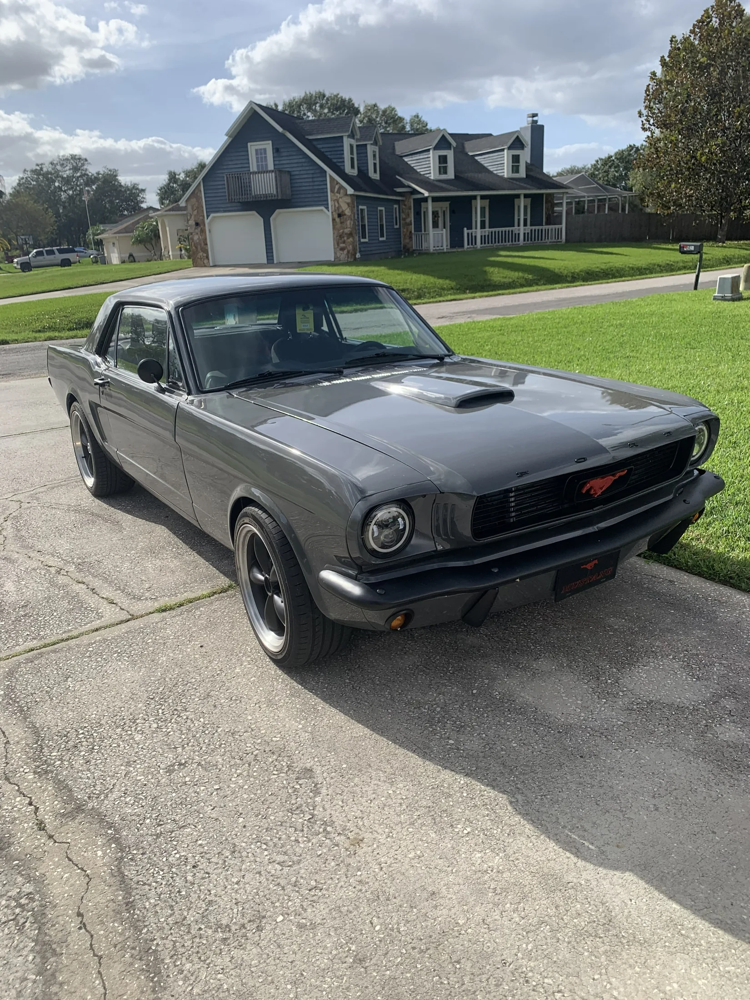
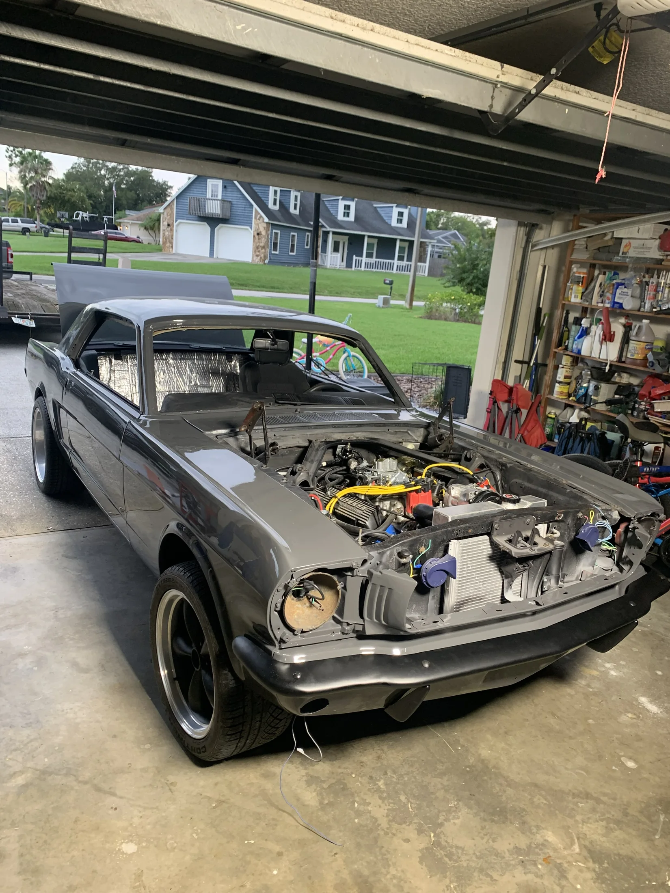

Finished / 1966 MustangMechanicalEngineering
AutomotiveFabrication
CADSolidWorks
FloridaLand O’ Lakes
CAD / FABRICATION / AUTOMOTIVE / ROBOTICS / FIELD ENGINEERING / RESEARCH /CAD / FABRICATION / AUTOMOTIVE / ROBOTICS / FIELD ENGINEERING / RESEARCH /
01 / Featured build
66
1966 Mustang
A home-garage restoration taken from teardown through final assembly, including a T-5 manual, front disc conversion, Mustang II suspension, body work, wiring, sound treatment, and a custom console.
Build record ↗
Selected work / separate case studies
More work
The home page stays short. Each project opens into its own page with the detail where it belongs.
Index / all work